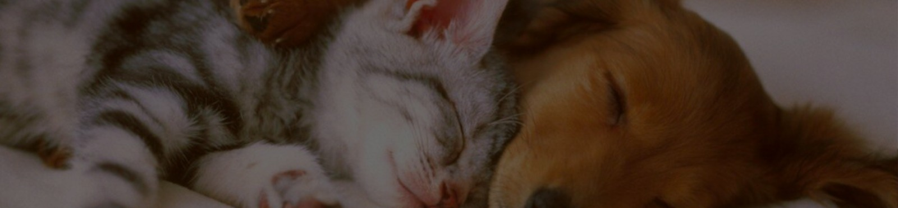

Nome:Mavie
Nome:MavieMavie foi encontrada junto com sua irmã, Maia, abandonada em Brusque. Foram resgatadas e agora Mavie precisa de um lar com muito espaço, amor e carinho. É super carinhosa e protetora!
 Nome: Difusor
Nome: DifusorDifusor é um gatinho macho, que foi encontrado em uma fábrica de peças automotivas (por isso o nome), chegou em estado caquético, com extrema magreza. Aos poucos foi se recuperando e hoje é um jovem 100% saudável e cheio de amor! Se dá bem com outros animais (cães e gatos). Negativo para FIV e FELV.
A Acapra é uma instituição dedicada ao resgate, proteção e adoção de cães em situação de vulnerabilidade. Nossa missão é encontrar lares seguros e amorosos para todos os animais, com transparência, respeito e compromisso com o bem-estar animal. Com mais de mil pets resgatados, nosso trabalho impacta vidas e gera uma rede de solidariedade, transformando o que seria tragédia em encontros felizes, carinho e uma segunda chance. Desde então, temos trabalhado incansavelmente para resgatar, reabilitar e encaminhar esses animais para lares cheios de amor.
Aqui estão nossas estatísticas atuais para o Sydney Wildlife Rescue neste ano!
adoções
animais disponíveis
animais nas ruas (estimativa)
Animais já adotados
Campanha de adoção no Centro
Doações recebidas em abril
Feira solidária ajuda abrigos
Voluntários contam histórias
Resgate de cães em risco